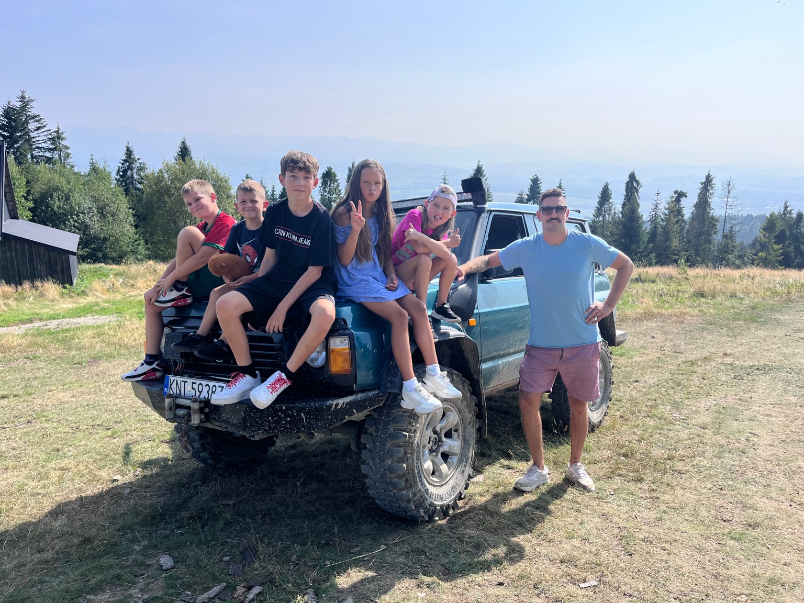
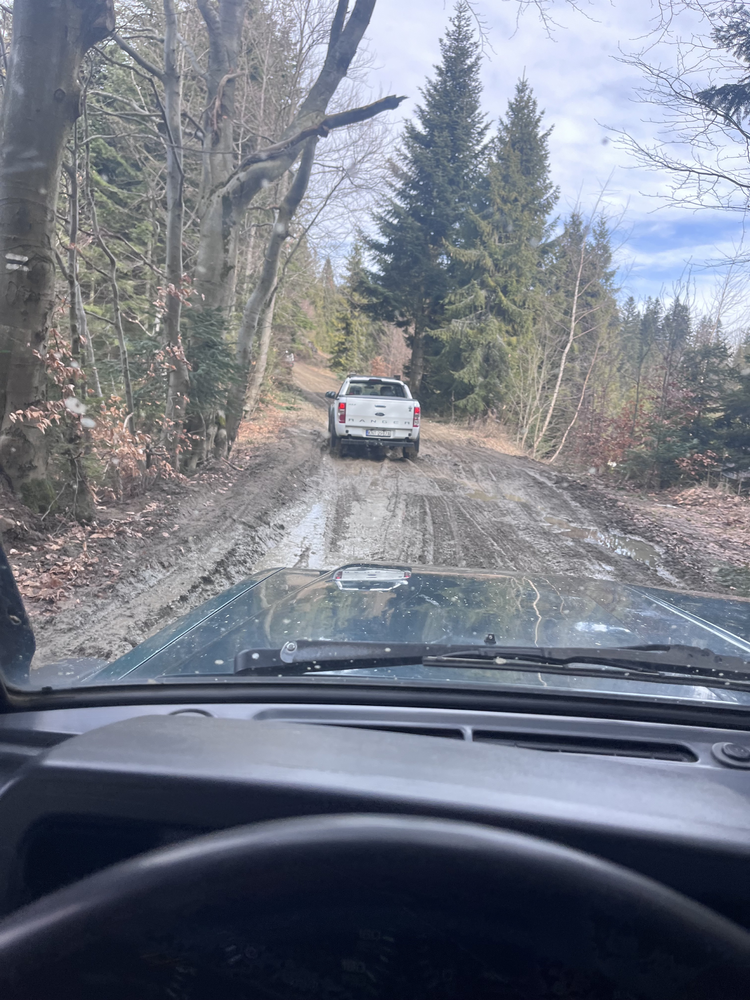
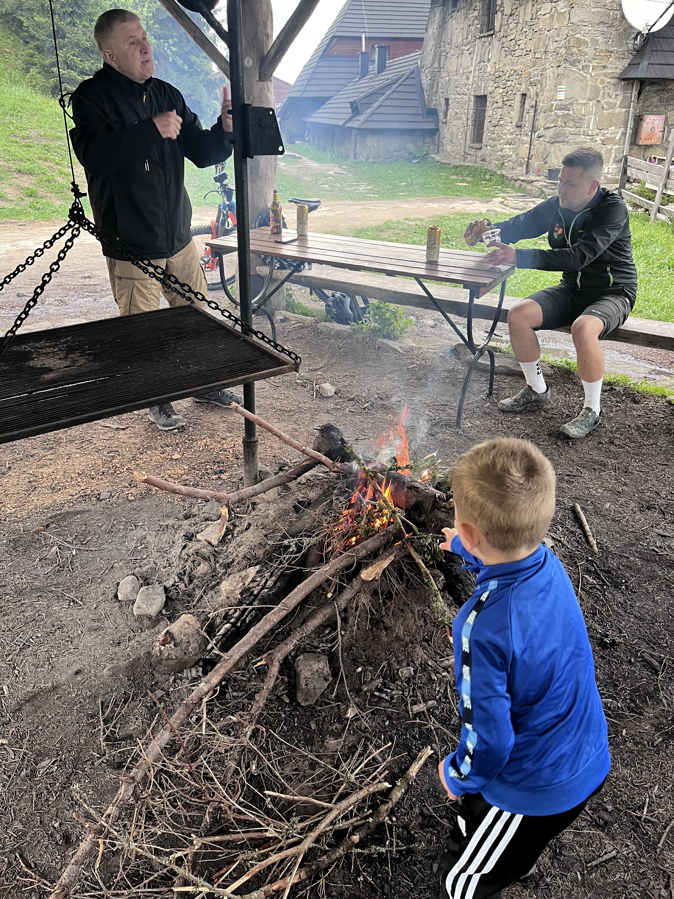

Wyjazd rusza z Nowego Targu albo Waksmundu. Jedziemy legalnymi drogami leśnymi i szutrami przez grzbiety Gorców. Są postoje i krótkie spacery. Na Turbaczu robimy przerwę do 1,5 h (widoki, schronisko, posiłek). Całość trwa około 6 godzin w turystycznym tempie.
Widoki, bezpieczne odcinki szutrowe i przystanki na zdjęcia. Idealne na pierwszy wspólny wypad.
Koleiny, błoto i podjazdy — w granicach zdrowego rozsądku. Trudność dopasowujemy do grupy i pogody.
Postój przy wiacie i ognisko z widokiem. Sprzęt i drewno bierzemy na pokład.
